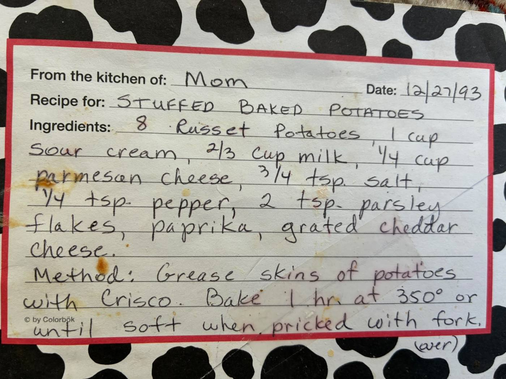
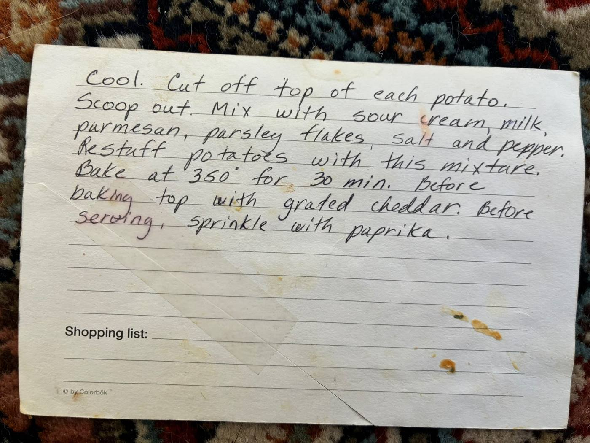

Breads & Sides
Stuffed Baked Potatoes
From the kitchen of Mom
Oven350°F
Bake1 hr + 30 min
Makes8 potatoes


Mom's original card (front and back) · tap to enlarge
Ingredients
Method tap a step to mark it done
- Grease the potato skins with Crisco.
- Bake 1 hour at 350°F, or until soft when pricked with a fork.
- Let cool. Cut off the top of each potato and scoop out the inside.
- Mix the scooped-out potato with the sour cream, milk, Parmesan, parsley flakes, salt and pepper.
- Restuff the potatoes with the mixture and top with grated cheddar.
- Bake at 350°F for 30 minutes.
- Sprinkle with paprika before serving.